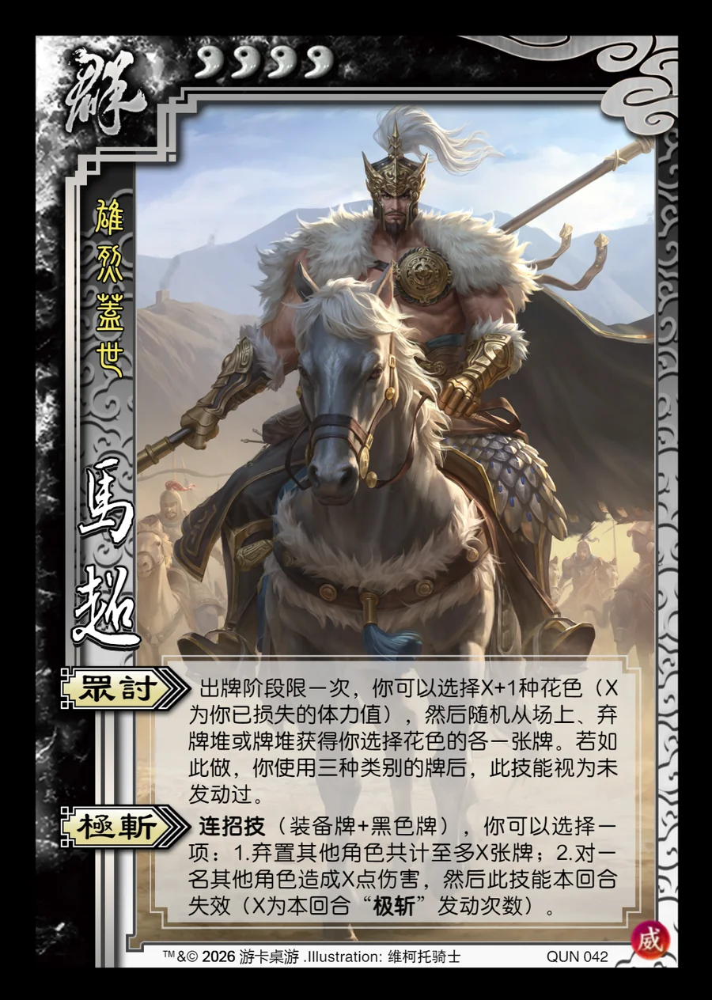

点击卡面查看大图
群
威马超
♥4雄烈盖世
众讨
出牌阶段限一次，你可以选择X+1种花色（X为你已损失的体力值），然后随机从场上、弃牌堆或牌堆获得你选择花色的各一张牌。若如此做，你使用三种类别的牌后，此技能视为未发动过。
极斩连招技
连招技（装备牌+黑色牌），你可以选择一项：1.弃置其他角色共计至多X张牌；2.对一名其他角色造成X点伤害，然后此技能本回合失效（X为本回合“极斩”发动次数）。

点击卡面查看大图
雄烈盖世
出牌阶段限一次，你可以选择X+1种花色（X为你已损失的体力值），然后随机从场上、弃牌堆或牌堆获得你选择花色的各一张牌。若如此做，你使用三种类别的牌后，此技能视为未发动过。
连招技（装备牌+黑色牌），你可以选择一项：1.弃置其他角色共计至多X张牌；2.对一名其他角色造成X点伤害，然后此技能本回合失效（X为本回合“极斩”发动次数）。